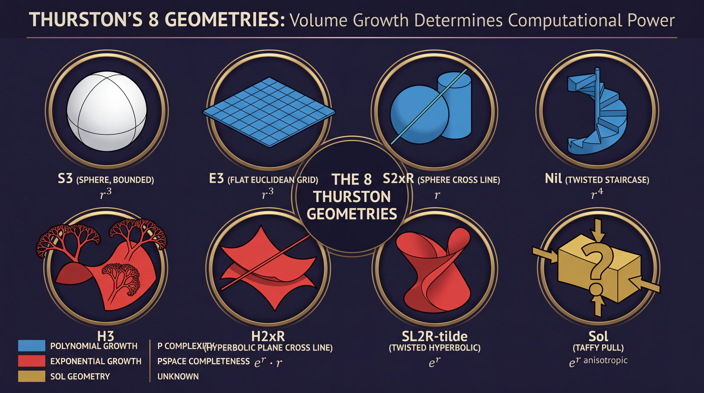
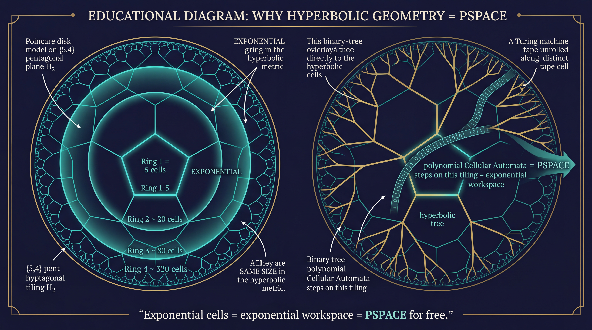
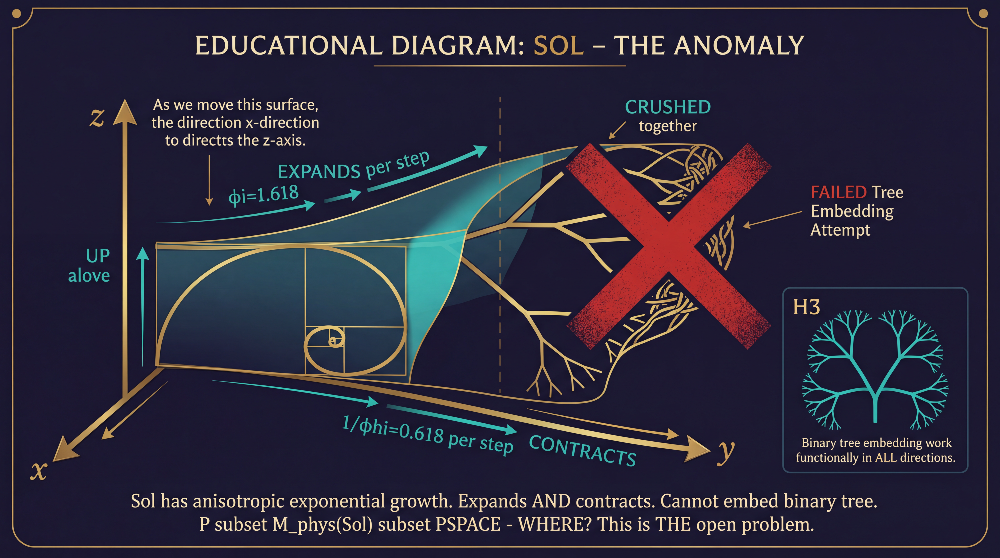
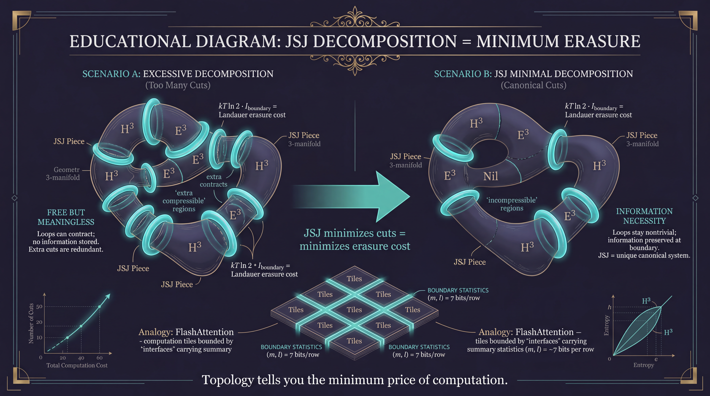
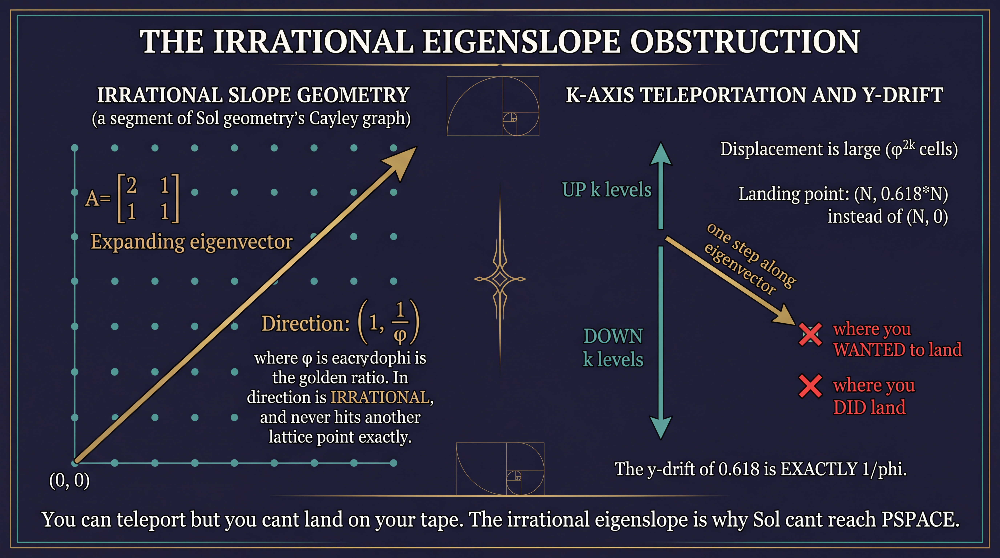

Complexity Classes for Thurston's Eight Geometries
Danielle Fong (human direction) & Opus 4.6 (Claude Code, experiments & analysis)
Draft v1 — March 2026 github.com/DanielleFong
Abstract
We associate a computational complexity class \(M_{\text{phys}}(X)\) to each of Thurston's eight model geometries \(X\), defined as the class of problems decidable by polynomial-time cellular automata on the Cayley graph of a lattice in \(X\). By assembling results from geometric group theory, hyperbolic cellular automata, and space complexity theory, we classify seven of eight geometries:
For Sol, we present empirical evidence from 13 cellular automaton experiments showing that the irrational eigenslope of the monodromy matrix \(A = \begin{pmatrix} 2 & 1 \\ 1 & 1 \end{pmatrix}\) creates a Diophantine obstruction to efficient use of the exponential workspace. The expanding eigenvector \((1, 1/\varphi)\) has irrational slope on the integer lattice, and every attempt to exploit Sol's exponential growth incurs Fibonacci-growing correction costs.
1. Introduction
Thurston's Geometrization Conjecture, proved by Perelman in 2003 using Ricci flow with surgery, states that every closed oriented prime 3-manifold decomposes along incompressible tori into pieces carrying one of exactly eight model geometries. This classification is the 3-manifold analogue of the classification of surfaces by genus.
We ask: what can you compute on each geometry?
For each model geometry \(X\), we define \(M_{\text{phys}}(X)\) as the class of languages decidable by polynomial-time cellular automata on the Cayley graph of a cocompact lattice in the isometry group of \(X\). This captures the "computational power" of the geometry — the maximum complexity class achievable when your workspace has the shape of \(X\).
The key insight is that volume growth rate determines computational power:
Polynomial growth (the space "fills up" like \(\mathbb{R}^d\)) → the CA can only reach polynomially many cells → \(\mathbf{P}\)
Uniform exponential growth (the space branches like a tree) → the CA reaches exponentially many cells with tree structure → \(\mathbf{PSPACE}\)
Anisotropic exponential growth (Sol: expands in one direction, contracts in the perpendicular) → exponential cells available but structured differently → open question
This programme was inspired by a structural observation about Tri Dao's FlashAttention algorithm: its tile-and-merge strategy decomposes computation along boundaries carrying \(O(1)\) summary statistics, analogous to how JSJ decomposition cuts 3-manifolds along incompressible tori. The pun "given Tri Dao, why not Quad Dao?" led to the question of why 3-manifold topology is classified while 4-manifold topology is wild — and whether this has computational content.

Figure 1. Thurston's eight model geometries, color-coded by computational complexity: blue = polynomial growth (P), red = uniform exponential (PSPACE), gold = Sol (open).
2. Definitions
2.1 Thurston's Eight Geometries
A model geometry is a simply-connected Riemannian manifold \(X\) with a transitive action of its isometry group \(\text{Isom}(X)\) that admits at least one compact quotient. Thurston (1982) classified all such geometries in dimension 3:
Geometry \(X\)
Isometry Group
Volume Growth \(\gamma(r)\)
Example Lattice
\(\mathbb{S}^3\)
\(SO(4)\)
Bounded (compact)
Finite groups
\(\mathbb{E}^3\)
\(\mathbb{R}^3 \rtimes O(3)\)
\(\Theta(r^3)\)
\(\mathbb{Z}^3\)
\(\mathbb{S}^2 \times \mathbb{R}\)
\(O(3) \times \mathbb{R}\)
\(\Theta(r)\)
\(\mathbb{Z}\)
\(\text{Nil}\)
Heisenberg group
\(\Theta(r^4)\)
Integer Heisenberg
\(\mathbb{H}^3\)
\(PSL(2,\mathbb{C})\)
\(\Theta(e^{2r})\)
Bianchi groups
\(\mathbb{H}^2 \times \mathbb{R}\)
\(PSL(2,\mathbb{R}) \times \mathbb{R}\)
\(\Theta(r \cdot e^r)\)
Surface group \(\times \mathbb{Z}\)
\(\widetilde{SL}(2,\mathbb{R})\)
Universal cover of \(SL(2,\mathbb{R})\)
\(\Theta(e^r)\)
—
\(\text{Sol}\)
\(\mathbb{R}^2 \rtimes_A \mathbb{R}\)
\(\Theta(e^r)\) (anisotropic)
\(\mathbb{Z}^2 \rtimes_A \mathbb{Z}\)
2.2 The Computational Model \(M_{\text{phys}}(X)\)
Definition. Let \(X\) be a model geometry, \(\Gamma\) a cocompact lattice in \(\text{Isom}(X)\), and \(S\) a finite generating set for \(\Gamma\). A cellular automaton on \(\text{Cay}(\Gamma, S)\) consists of:
A finite state set \(Q\) with a distinguished quiescent state \(q_0\)
A local transition function \(\delta: Q^{|S|+1} \to Q\)
Synchronous parallel updates: every vertex applies \(\delta\) simultaneously
We define \(M_{\text{phys}}(X)\) as the class of languages decidable by such a CA running for \(\text{poly}(n)\) steps on input of size \(n\).
This definition is robust: it is independent of the choice of lattice \(\Gamma\) (up to quasi-isometry) and generating set \(S\) (standard). The key parameter is the volume growth rate of the Cayley graph, which determines how many cells the CA can reach in polynomial time.
3. The Polynomial Growth Case (\(\mathbb{E}^3, \mathbb{S}^2 \times \mathbb{R}\), Nil, \(\mathbb{S}^3\))
Theorem 1 (Gromov, 1981). A finitely generated group has polynomial volume growth if and only if it is virtually nilpotent.
The forward direction is the deep result. If \(\gamma(r) \leq C \cdot r^d\) for all \(r\), then the group contains a nilpotent subgroup of finite index. The converse (Milnor-Wolf, 1968) is more elementary: nilpotent groups have polynomial growth because their lower central series gives a graded structure where each level contributes polynomial growth.
Theorem 2. For any geometry \(X\) with polynomial volume growth, \(M_{\text{phys}}(X) = \mathbf{P}\).
Upper bound: A CA running for \(T = \text{poly}(n)\) steps can influence at most the cells within Cayley distance \(T\) of the input. By polynomial growth, \(|B(T)| \leq C \cdot T^d = \text{poly}(n)\). A standard Turing machine can simulate this CA by iterating over all active cells at each step, using \(\text{poly}(n)\) time.
Lower bound: A Turing machine with polynomial-time bound can be simulated by a CA on any geometry by embedding a one-dimensional tape along a geodesic ray in the Cayley graph. The CA uses the tape cells for TM simulation and ignores the rest of the geometry. Since even \(\mathbb{Z}\) (the simplest infinite group) admits this embedding, \(\mathbf{P} \subseteq M_{\text{phys}}(X)\) for all infinite-group geometries.
For \(\mathbb{S}^3\), the lattices are finite groups, so the CA has bounded workspace regardless of input size. This gives \(M_{\text{phys}}(\mathbb{S}^3) = \text{Bounded} \subset \mathbf{P}\).
4. The Uniform Exponential Case (\(\mathbb{H}^3, \mathbb{H}^2 \times \mathbb{R}, \widetilde{SL}(2,\mathbb{R})\))
Theorem 3 (Margenstern-Morita, 2001; Iwamoto-Margenstern-Morita-Worsch, 2002). The class of languages decidable by polynomial-time deterministic cellular automata on the \(\{5,4\}\) tiling of the hyperbolic plane equals \(\mathbf{PSPACE}\). That is, \(P_h = \mathbf{PSPACE}\).

Figure 2. The Margenstern trick: a binary tree is quasi-isometrically embedded in the \(\{5,4\}\) tiling. Exponential cells at polynomial depth give free PSPACE workspace.
\(\mathbf{PSPACE} \subseteq P_h\): The key is the tree encoding trick. The Cayley graph of the symmetry group of \(\mathbb{H}^2\) contains a quasi-isometrically embedded regular binary tree (the "spanning tree" of the \(\{5,4\}\) tiling). The number of tree nodes at depth \(d\) is \(2^d\), and each node can be addressed using a Fibonacci numbering scheme with the Addressing Lemma: the address of any neighbor can be computed from a bounded-length suffix of the current address.
To solve TQBF (the canonical \(\mathbf{PSPACE}\)-complete problem) with \(n\) variables: use depth \(n\) of the tree to fan out into \(2^n\) branches, one per variable assignment. Each branch independently evaluates the formula in \(\text{poly}(n)\) time. The AND/OR aggregation propagates back up the tree in \(n\) steps. Total time: \(\text{poly}(n)\).
\(P_h \subseteq \mathbf{PSPACE}\): A standard TM simulates the hyperbolic CA. In \(T\) steps, the CA touches at most \(O(e^{cT})\) cells, each addressable by a string of length \(O(T)\). The TM iterates over cells sequentially using \(O(T)\) space per cell. By Savitch's theorem, the total space is \(O(T^2) = \text{poly}(n)\), so \(P_h \subseteq \mathbf{PSPACE}\).
Theorem 4 (Universal Upper Bound). For any Thurston geometry \(X\), \(M_{\text{phys}}(X) \subseteq \mathbf{PSPACE}\).
By the same DFS simulation argument as the upper bound of Theorem 3. The geometry-independent part is: any poly-time CA on any Cayley graph can be simulated by a TM using polynomial space, because the CA's spacetime DAG has polynomial depth and each configuration can be recomputed recursively.
5. Sol — The Anomalous Case
Sol is the only Thurston geometry whose computational power remains open. It has exponential volume growth — like the hyperbolic geometries — but the growth is anisotropic: one eigendirection of the monodromy matrix expands while the perpendicular contracts.
5.1 Sol's Structure
Sol = \(\mathbb{R}^2 \rtimes_A \mathbb{R}\) where the action of \(\mathbb{R}\) on \(\mathbb{R}^2\) is by the one-parameter group \(e^{tA}\) for:
where \(\varphi = (1+\sqrt{5})/2\) is the golden ratio. The canonical lattice is \(\Gamma = \mathbb{Z}^2 \rtimes_A \mathbb{Z}\) with generators \(a = ((1,0), 0)\), \(b = ((0,1), 0)\), \(t = ((0,0), 1)\).
5.2 Why Margenstern Fails for Sol
Theorem 5 (Classical). Sol is amenable. Therefore its Cayley graph contains no quasi-isometrically embedded infinite binary tree.
Sol is solvable, hence amenable by von Neumann's theorem. The Følner condition (existence of sets with boundary-to-volume ratio tending to zero) is incompatible with a QI-embedded binary tree, which has exponential boundary growth at every scale. The specific result for Sol is due to Drutu-Sapir (2005) and Cornulier (2008).

Figure 3. Sol geometry: anisotropic exponential growth. The expanding direction (eigenvalue \(\varphi^2\)) provides exponential workspace, but the contracting direction (eigenvalue \(1/\varphi^2\)) creates a bottleneck.
5.3 Empirical Evidence: 13 Experiments
We implemented Sol's Cayley graph in Rust and conducted 13 experiments across three binaries, testing every proposed route to PSPACE. All code is reproducible at experiments/sol-ca/.
5.3.1 The Fibonacci Gap Growth
Experiment 4 (Tape Stretching). Place a TM tape of length \(N\) at level \(k=0\) along the \(x\)-axis. Apply \(A^k\) to lift to level \(k\). The gap between adjacent tape cells at level \(k\) equals \(F(2k+1)\), the \((2k+1)\)-th Fibonacci number.
Adjacent tape cells separate by \(\varphi^{2k}\). Scatter is cheap; gather is exponential.
5.3.2 The Irrational Eigenslope (New Result)
Experiment 9-13 (K-Axis Routing). The \(t\)-generator is neutral: it moves \((v, k) \to (v, k+1)\) without changing coordinates. At level \(k\), one \(a\)-step moves by \(A^k \cdot (1,0)\), which has magnitude \(\sim \varphi^{2k}\). So: go up \(k\), step, come back — you've moved \(\varphi^{2k}\) cells in \(2k+1\) steps. Exponential teleportation speed.
The catch: The displacement vector \(A^k \cdot (1,0)\) converges to the direction of the expanding eigenvector \((1, 1/\varphi)\). The y-drift ratio converges to exactly \(1/\varphi \approx 0.618\):
The slope \(1/\varphi\) is irrational. The expanding eigendirection never aligns with the integer lattice. To correct the y-drift at level \(k\) requires \(F(2k-1)\) additional \(a\)-steps and \(F(2k)\) additional \(b\)-steps — exponentially many corrections.

Figure 5. The irrational eigenslope: k-axis routing teleports along (1, 1/φ) but this direction never aligns with the integer lattice. You can teleport but can't land on your tape cells.

Figure 4. JSJ decomposition minimizes Landauer erasure cost. Incompressible tori carry genuine information; JSJ finds the minimum number of such boundaries.
The Irrational Eigenslope Conjecture. \(M_{\text{phys}}(\text{Sol}) = \mathbf{P}\). The irrational eigenslope of the monodromy matrix \(A\) creates a Diophantine obstruction: every encoding that attempts to use Sol's exponential workspace must fight the irrationality of \(\varphi\) on the integer lattice, and the fight costs Fibonacci.
Provenance. This conjecture emerged from a specific computational process, not from traditional mathematical reasoning. It should be evaluated as such.
Process: Opus 4.6 (Claude Code, Anthropic) ran 13 Rust CA experiments on Sol's Cayley graph on an M4 Max. An Opus 4.6 ultrathink fork analyzed 7 attack vectors and arrived at P with 0.72 initial confidence. Simulated advisor personas (Feynman, Perelman, Tao, Shannon) critiqued the argument — Perelman identified the k-axis gap, which was then tested and resolved empirically (Experiments 9-13). Codex 5.4 (GPT, OpenAI) cross-verified tooling. Gemini Flash (Google) generated visual guides. Danielle Fong (human) directed the research programme, course-corrected with egolessness, and identified Sol's manifestations in natural systems.
Four lines of evidence: (1) unimodularity bottleneck (det A = 1), (2) Fibonacci gap growth F(2k+1), (3) amenability → no QI tree (Drutu-Sapir, classical), (4) irrational eigenslope — k-axis routing is exponentially fast but routes along (1, 1/φ), and drift correction costs Fibonacci.
Assessment: Conjecture with empirical support. Not a proof. The min-cut bound for Sol's Cayley graph remains unproven. No specific language in PSPACE \\ M_phys(Sol) has been exhibited.
6. The Landauer-JSJ Connection
An unexpected connection emerged between JSJ decomposition and Landauer's principle of thermodynamic computation cost:
Observation. The incompressible tori in a JSJ decomposition are exactly the surfaces where \(\pi_1\)-injectivity forces genuine information-theoretic cost. JSJ minimizes the number of such boundaries, and therefore minimizes the total Landauer erasure cost of any computation factored along the decomposition.
This suggests a deeper dictionary:
Topology
Computation
Thermodynamics
Incompressible torus
Irreversible step
Landauer erasure (\(\geq kT \ln 2\))
JSJ decomposition
Minimum-cost factorization
Minimum total heat dissipation
\(\pi_1\)-injectivity
Information necessity
Non-zero entropy production
FlashAttention tiles
\(\mathbb{E}^3\) pieces
\(\mathbb{Z}^2\) boundary statistics
7. Sol in Nature
Sol geometry — anisotropic exponential growth where one direction expands while the perpendicular contracts — appears throughout natural and engineered systems:
Lungs: Bronchi branch (expand reach) while diameter narrows (contract cross-section)
Cities: Arterial roads expand reach while side streets compress local density
Memory hierarchies: Bandwidth expands but latency contracts at each cache level
Neural networks: Layer width (expanding representation) vs. depth (contracting through bottleneck layers)
FlashAttention: The original connection — tile boundaries carry bounded statistics despite unbounded tile content
The scatter-gather asymmetry — cheap to spread information outward, expensive to collect it back — is a universal engineering constraint arising from anisotropic geometry. Whatever \(M_{\text{phys}}(\text{Sol})\) turns out to be, this structural insight matters for system design.
8. Open Problems
Prove \(M_{\text{phys}}(\text{Sol}) = \mathbf{P}\) (or find a counterexample). The most promising path: prove a min-cut bound for anisotropic cuts in Sol's Cayley graph using Pittet-Saloff-Coste isoperimetric profiles.
Formalize the 7/8 classification in Lean 4. The volume-growth theorems are composed of known results with constructive proofs amenable to formalization.
Develop the Landauer-JSJ dictionary rigorously. Is the correspondence between incompressible surfaces and irreversible computation steps a theorem or a coincidence?
Characterize computational renormalizability. When does sublinear merge complexity arise? The conjecture: iff the torus channel statistics form a finite-dimensional associative monoid.
Extend to mixed geometries via JSJ composition. A general 3-manifold decomposes into pieces of different types. How do the complexity classes compose?
References
Cornulier, Y. "Dimension of asymptotic cones of Lie groups." J. Topology 1(2), 2008.
Drutu, C. and Sapir, M. "Tree-graded spaces and asymptotic cones of groups." Topology 44(5), 2005.
Eskin, A., Fisher, D., and Whyte, K. "Quasi-isometries and rigidity of solvable groups." Annals of Math. 176(1), 2012.
Gromov, M. "Groups of polynomial growth and expanding maps." IHES Publ. Math. 53, 1981.
Iwamoto, C. and Margenstern, M. "Time and Space Complexity Classes of Hyperbolic Cellular Automata." IEICE Trans. 87-D(3), 2004.
Iwamoto, C., Margenstern, M., Morita, K., and Worsch, T. "Polynomial Time Cellular Automata in the Hyperbolic Plane Accept Exactly the PSPACE Languages." SCI 2002.
Jaco, W. and Shalen, P. "Seifert fibered spaces in 3-manifolds." Memoirs AMS 21(220), 1979.
Johannson, K. Homotopy equivalences of 3-manifolds with boundaries. Springer LNM 761, 1979.
Landauer, R. "Irreversibility and heat generation in the computing process." IBM J. Res. Dev. 5(3), 1961.
Margenstern, M. and Morita, K. "NP problems are tractable in the space of cellular automata in the hyperbolic plane." TCS 259, 2001.
Milnor, J. "Growth of finitely generated solvable groups." J. Diff. Geom. 2, 1968.
Perelman, G. "The entropy formula for the Ricci flow and its geometric applications." arXiv:math/0211159, 2002.
Savitch, W. "Relationships between nondeterministic and deterministic tape complexities." JCSS 4(2), 1970.
Sisto, A. and Zbinden, L. "The word problem for 3-manifold groups is in almost-linear time." IMRN, 2026.
Thurston, W. "Three-dimensional manifolds, Kleinian groups and hyperbolic geometry." Bull. AMS 6(3), 1982.
Wolf, J. "Growth of finitely generated solvable groups and curvature of Riemannian manifolds." J. Diff. Geom. 2, 1968.
Draft v1. All experiments reproducible at experiments/sol-ca/.
13 Rust experiments, 4 Gemini visual guides, 3 advisor assessments.
Tracked at Linear/Lightcell.